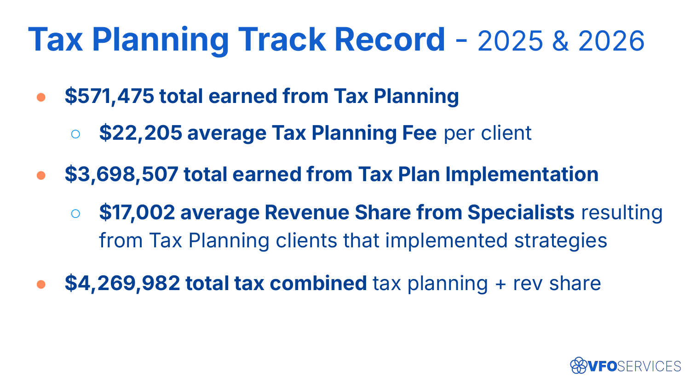
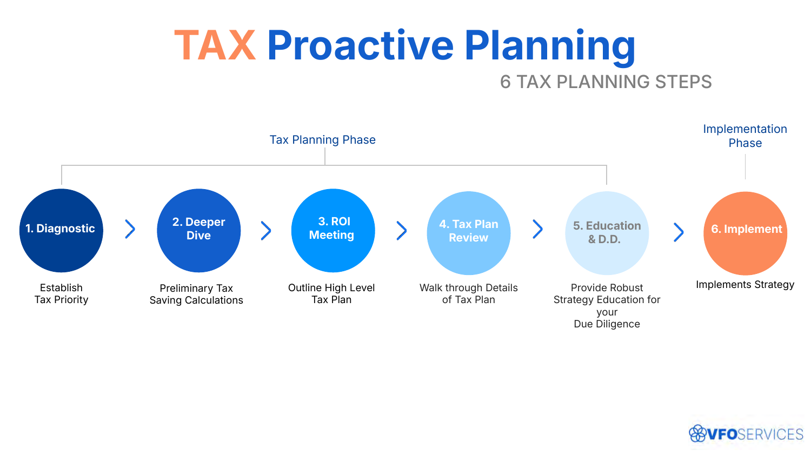
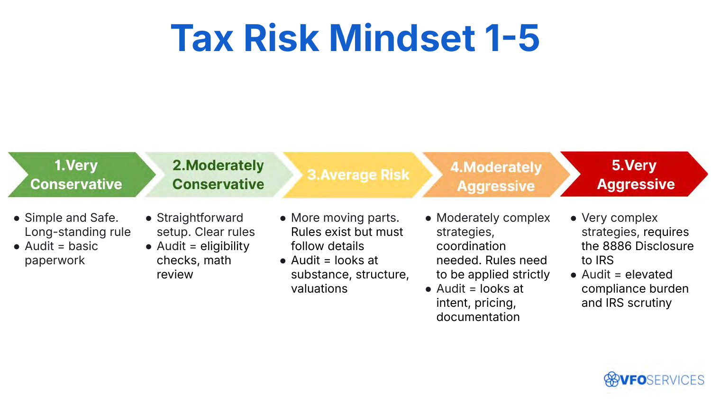
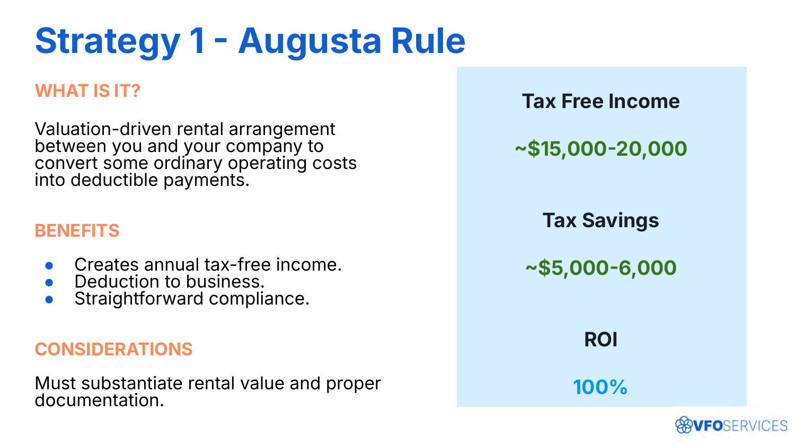
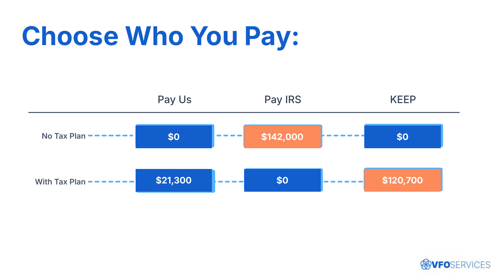

1 不是理论
这是结果，不是空谈
先摆数字：2025–2026 年，税务规划费共 $571,475（每户平均 $22,205）；由规划带来的实施环节（专家收入分成）共 $3,698,507；合计 $4,269,982。先证明"这套真的赚钱"，再谈方法。

2 流程
6 步主动税务规划流程
把"销售"拆成一条可复制的流程：① 诊断（确立税务优先级）→ ② 深挖（初步测算）→ ③ ROI 会议（高层方案）→ ④ 税务计划评审（细节走查）→ ⑤ 教育与尽调 → ⑥ 实施。客户在"被教育、被尊重"的过程中自然决策，而不是被推销。

理想客户（多数情况）：AGI $500k+、年税负 $100k+；或一次性机会（资本利得 $1M+、企业退出、资产/股票出售、RSU、诉讼/继承等）。
3 对齐预期
用"税务风险心态 1–5"对齐
先让客户给自己定位风险偏好（1=非常保守 … 5=非常激进），再据此匹配策略与稽核口径——从"基础文书"到需要 8886 披露的高复杂度策略。这一步把"激进与否"的主观判断显性化，避免事后分歧。

4 策略栈
从最低风险开始，层层叠加
方案以"由低风险到高、可累计叠加"的方式呈现，每个策略都讲清：好处、实施成本、潜在节税、ROI。例如 Augusta Rule（奥古斯塔规则）——把部分经营成本转为对自己公司的合规租金，创造年度免税收入，ROI 约 100%。其余如家庭雇佣、Advanced Combo Plan、税收抵免投资等依次叠加。

5 收口
让客户"选择把钱付给谁"
最有力的收口不是催单，而是一张对照：不做规划，$142,000 全付给 IRS、自己留 $0；做了规划，付 $21,300、IRS $0、自己留下 $120,700。决策权交还客户——你只是把选项摆清楚。

Key Takeaways
三句话记住"不像销售的销售"
- 先证明结果——用真实业绩与 ROI 说话，而非话术。
- 用流程替代推销——6 步流程 + 税务风险心态，让客户被教育、自决策。
- 把选择权还给客户——"选择把钱付给谁"，成交是结论，不是逼单。